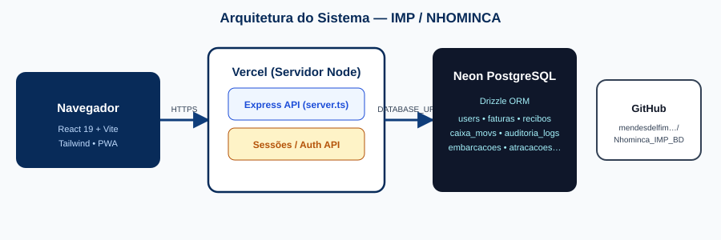
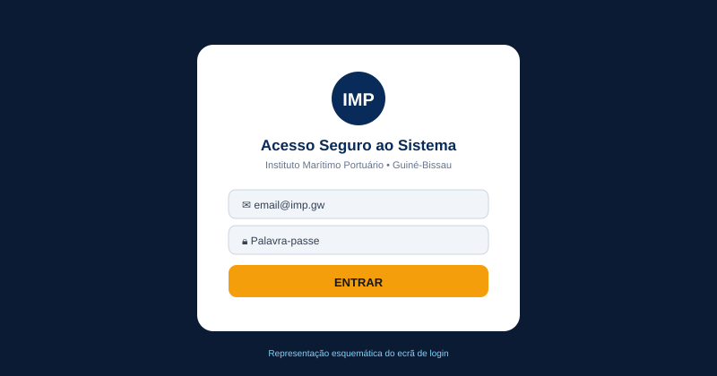
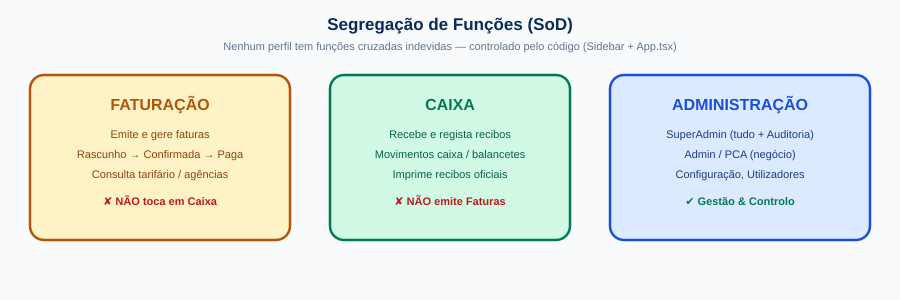

1. Visão Geral
O NHOMINCA é o sistema integrado do Instituto Marítimo Portuário (IMP) para gestão de autoridade portuária: faturação oficial de taxas e tarifas portuárias, tesouraria e controlo de caixa, recibos de quitação, registos de movimentos de caixa, relatórios oficiais (fluxo de caixa, tráfego de navios, balancetes, auditorias PSC), embarcações, agências marítimas, armadores, atracações/escalas, inspecções, certificados, licenças, multas, auditoria criptográfica (cadeia SHA-256) e gestão de utilizadores com Segregação de Funções (SoD).
Cada utilizador vê apenas o que o seu perfil permite. A navegação e as ações são condicionadas pelo cargo/perfil (`role`/`funcao`): superadmin, admin, faturacao, caixa, INSPECTOR e CAPITANIA.
2. Arquitetura & Tecnologias
| Camada | Tecnologia |
|---|---|
| Frontend | React 19 + Vite + TypeScript + Tailwind (temas claro/escuro, multiidioma PT/FR/EN) |
| Servidor | Node.js + Express + TypeScript (`server.ts`), serve a API e a SPA |
| Base de Dados | PostgreSQL (Neon/Supabase) via Drizzle ORM (`src/db/schema.ts`) |
| Persistência | Variável `DATABASE_URL` → liga à base de dados real; sem ela, o sistema usa dados de demonstração (mock em `src/mock/data.ts`) sem persistência partilhada |
| Autenticação | Login por credenciais do utilizador; sessão mantida no navegador (refresh não desloga); `/api/auth/me`, tokens no servidor |
| Hospedagem | Vercel (frontend/servidor) + Neon PostgreSQL (dados) — ou Render via `render.yaml` |

3. Contas & Perfis do Sistema
Contas iniciais (modo de demonstração / seed). Podem ser geridas em Utilizadores & Perfis (só admins).
| Perfil | Nome / Utilizador | Palavra-passe (demo) | Cargo oficial | Departamento | |
|---|---|---|---|---|---|
| SUPERADMIN | Eng. SuperAdministrador | superadmin@imp.gw | superadmin123 | Engenheiro de Sistemas / Desenvolvedor | Tecnologias de Informação & Auditoria |
| ADMIN / PCA | Dr. Gualdino Afonso Té | admin@imp.gw | admin123 | Presidente do Conselho (PCA / Admin) | Direcção Geral (IMP) |
| FATURAÇÃO | Sr. António Okica de Sá | faturacao@imp.gw | faturacao123 | Operador de Faturação | Secção de Faturação & Tarifas Portuárias |
| CAIXA | Dr. Álvaro Luís Da Silva | caixa@imp.gw | caixa123 | Operador de Caixa / Tesouraria | Tesouraria & Controlo de Valores |
| INSPECTOR | Eng. Adama Baldé | adama.balde@imp.gb | InspectorPass2026! | Inspector Chefe de Segurança | Inspecção e Segurança Marítima |
| CAPITANIA | Capitão Bacar Camará | bacar.camara@imp.gb | Capitania2026! | Capitão do Porto de Bissau | Capitania dos Portos |
3.1 O que cada conta pode fazer
| Perfil | Resumo das funções |
|---|---|
| SUPERADMIN | Acesso total. Tudo o que o admin faz + Auditoria Criptográfica (cadeia SHA-256 completa), gestão técnica e configuração avançada. É a única conta com acesso ao módulo de Auditoria. |
| ADMIN / PCA | Gestão completa de negócio. Dashboard global, Faturação, Tesouraria, Receitas/Rubricas, Embarcações, Agências, Armadores, Atracações, Inspecções, Certificados, Licenças, Multas, Relatórios & Estatísticas, Utilizadores & Perfis (criar/editar operadores, atribuir cargos/perfis), Configuração. Não acede à Auditoria Criptográfica (exclusiva do superadmin). |
| FATURAÇÃO | Caixa separada da tesouraria (SoD). Criar/editar/emitir Faturas oficiais (rascunho → confirmada → parcial/paga → anulada com justificação), consultar Tarifário Oficial, consultar Agências e Navios (consulta), Relatórios/Extratos de Faturação. Nunca vê/movimentos de caixa, recibos de quitação, saídas de caixa, auditoria ou configuração. |
| CAIXA | Operador de tesouraria. Registar Recibos (pagamentos totais/parciais de faturas), gerir Movimentos de Caixa (entradas/saídas com justificação e autorização), balancetes e consultas, Relatórios/Balancetes de tesouraria. Nunca emite/edita faturas, nem auditoria/configuração. |
| INSPECTOR | Perfil operacional/consulta amplo: Dashboard, Faturação, Tesouraria, Rubricas, Navios, Agências, Armadores, Atracações. Sem áreas de administração (utilizadores, relatórios, auditoria, configuração, inspecções/certificados/licenças/multas). |
| CAPITANIA | Perfil operacional da Capitania: Dashboard, Faturação, Tesouraria, Rubricas, Navios, Agências, Armadores, Atracações. Sem áreas de administração/regulamentação. |
4. Matriz de Permissões (o que pode ver / fazer)
Legenda: ✔ completo ◐ consulta/limitado ✘ sem acesso
| Módulo / Área | Superadmin | Admin (PCA) | Faturação | Caixa | Inspector / Capitania |
|---|---|---|---|---|---|
| Dashboard / Painel geral | ✔ | ✔ | ✔ (Painel Faturação) | ✔ (Painel de Caixa) | ✔ |
| Faturação (criar/editar/emitir/anular faturas) | ✔ | ✔ | ✔ | ✘ | ◐ |
| Tesouraria / Caixa (recibos, entradas/saídas) | ✔ | ✔ | ✘ | ✔ | ◐ |
| Receitas & Rubricas / Tarifário Oficial | ✔ | ✔ | ◐ (consultar tarifas) | ◐ | ◐ |
| Embarcações / Navios | ✔ | ✔ | ◐ Consulta | ◐ | ✔ |
| Agências Marítimas | ✔ | ✔ | ◐ Consulta | ◐ Consulta | ✔ |
| Armadores | ✔ | ✔ | ✘ | ✘ | ✔ |
| Portos / Terminais | ✔ | ✔ | ✘ | ✘ | ✔ |
| Atracações & Escalas | ✔ | ✔ | ✘ | ✘ | ✔ |
| Inspecções Marítimas (PSC) | ✔ | ✔ | ✘ | ✘ | ✘ |
| Certificados Marítimos | ✔ | ✔ | ✘ | ✘ | ✘ |
| Licenças de Navegação | ✔ | ✔ | ✘ | ✘ | ✘ |
| Multas & Infrações | ✔ | ✔ | ✘ | ✘ | ✘ |
| Relatórios & Estatísticas (fluxo de caixa, tráfego, balancetes, PSC) | ✔ | ✔ | ◐ Extratos de faturação | ◐ Balancetes | ✘ |
| Utilizadores & Perfis (criar/editar contas, cargos, permissões) | ✔ | ✔ | ✘ | ✘ | ✘ |
| Configuração do Sistema | ✔ | ✔ | ✘ | ✘ | ✘ |
| Auditoria Criptográfica (cadeia SHA-256) | ✔ | ✘ | ✘ | ✘ | ✘ |
| Imprimir (faturas, recibos, balancetes, extratos) | ✔ | ✔ | ✔ (faturas) | ✔ (recibos/balancetes) | ◐ |
| Exportar relatórios (CSV/PDF) | ✔ | ✔ | ◐ | ◐ | ✘ |
| Meu Perfil (foto, nome, email, senha, sexo) | ✔ | ✔ | ✔ | ✔ | ✔ |
SoD = Segregação de Funções: Faturação não toca em Caixa; Caixa não emite Faturas; ninguém tem funções cruzadas indevidas.
5. Catálogo de Módulos
- Dashboard / Painel Geral — visão operacional: faturação do período, tesouraria, atividade, atalhos (“Nova Fatura”, “Emitir Fatura”).
- Minha Sessão & Perfil — ver/editar foto, nome completo, email, senha, sexo; cargo/posto e perfil são atribuídos pelo ADMIN (só leitura). Mostrar último acesso ao sistema. Sessão mantida com refresh/atualização.
- Utilizadores & Perfis (admin) — criar/editar operadores, atribuir cargo, perfil (funcao/role), departamento, estado; conciliar permissões SoD.
- Faturação & Tarifas — lista de faturas IMP; estados: rascunho → confirmada → parcial (amortização) → paga → anulada (anulada exige justificação e é auditada). Emissão de fatura oficial imprimível (A4) com QR/verificação; saldo pago/pendente calculado automaticamente.
- Caixa & Tesouraria — recibos (quitação total/parcial de fatura), movimentos de caixa (entradas/saídas), saídas com documento comprovativo, beneficiário, autorização e justificação; balancete diário; impressão de recibo A4/duplo.
- Receitas & Rubricas (Tarifário Oficial) — tabela oficial de taxas portuárias IMP (pilotagem, cais/atracação, rebocadores, faróis, licenças, inspecções, multas…).
- Embarcações — registo de navios (IMO, tonelagem, armador, agência, certificações).
- Agências Marítimas — registo de agentes (NIF, licença, representante, contactos).
- Armadores — registo de armadores/proprietários (frota, país, tipo de entidade).
- Portos & Terminais — portos, cais, calados e capacidades.
- Atracações & Escalas — escalas, cais designados, serviços solicitados, manifesto de carga.
- Inspecções Marítimas — vistorias PSC (Segurança, MARPOL), resultados Aprovado/Retido, validade.
- Certificados — certificados de navegabilidade, lotação, etc.
- Licenças de Navegação — licenças de pesca/cabotagem, validade e estado.
- Multas & Infrações — autos de infração com valor e estado.
- Relatórios & Estatísticas — Fluxo de Caixa Mensal (com anos anteriores), Tráfego de Navios (filtros), Auditoria de Segurança & Vistorias PSC, Balancete Financeiro & Arrecadação de Taxas IMP; filtros por período/ano/estado; exportação CSV/PDF; impressão oficial.
- Auditoria Criptográfica (superadmin) — cadeia imutável de logs de ações (emitir fatura, liquidar, saída de caixa…) encadeada por SHA-256; verificação de integridade.
- Configuração (admin) — parâmetros do sistema e dados institucionais.
6. Fluxos Principais
6.1 Login & sessão
- Ecrã de login com identificação IMP; autenticação por email + palavra-passe.
- Ao entrar, o sistema restaura a sessão e o módulo ativo ao atualizar a página (refresh não desloga).
- “Terminar sessão” no menu do perfil (canto superior direito).
- Menu do perfil → Meu Perfil / Email de contacto / Terminar sessão.
6.2 Fatura (Faturação)
- Dashboard → atalho “Nova Fatura” → formulário “Emitir Fatura”.
- Preencher cliente/agência, navio, tipo, tonelagem e linhas de serviço (do tarifário). Total e saldo pendente calculados automaticamente.
- Estado: Rascunho → Confirmada (impressa/entregue) → após recibos: Amortização Parcial / Totalmente Paga. Anulação exige justificação (fica auditada).
6.3 Recibo (Caixa)
- Tesouraria → selecionar fatura → Registar Recebimento (total ou parcial) indicando banco e talão.
- Gera recibo oficial nº REC-2026-XXXX, atualiza saldo da fatura e movimentos de caixa; imprimível A4/duplo.
6.4 Movimento de saída (Caixa)
- Tesouraria → “Novo Movimento” tipo Saída.
- Obrigatório: descrição, valor, categoria, beneficiário, documento comprovativo (ref., ex.: FAT-PETRO-…), autorizado por e justificação detalhada.
- Saindo para fora: só com autorização válida (Direção Geral / SuperAdministração); o evento entra na cadeia de auditoria.
6.5 Perfil (qualquer conta)
- Menu do perfil → Meu Perfil. Nome e email visíveis, mas bloqueados até clicar em “Ativar alterações”.
- Podem alterar: foto, nome completo, email, senha (via chave de segurança) e sexo.
- Cargo/posto e perfil (FATURAÇÃO/CAIXA/ADMIN…) são atribuídos pelo admin — apenas leitura.
7. Segurança & Segregação de Funções (SoD)
- SoD estrita: Faturação nunca vê Tesouraria; Caixa nunca emite Faturas; perfis cruzados são bloqueados automaticamente no sistema (módulos são redirecionados).
- Acesso à API: em produção, as rotas
/api/*exigem autenticação (ENABLE_API_AUTH=truepor omissão). Headers de segurança (nosniff, HSTS…), CORS configurável (CORS_ORIGIN), limite de body, rate limiting no login. - Auditoria criptográfica: cada ação crítica grava um log encadeado (hash SHA-256 ligado ao log anterior) — falsificação é detetável.
- Data scoping do Caixa: o operador de caixa vê apenas as suas ações/recibos nas vistas pessoais (Movimentações próprias), respeitando a privacidade da tesouraria.
- Sessão: mantém-se com refresh/atualização; o módulo ativo é restaurado; tokens no servidor têm TTL (12h).
8. Dados & Persistência
- Base de dados real = PostgreSQL (Neon) ligação via
DATABASE_URL(já configurada neste projeto/`.env` e nas variáveis da Vercel). - Tabelas:
users, faturas, recibos, caixa_movs, auditoria_logs, embarcacoes, agencias, armadores, atracacoes(+ índices). - Sem
DATABASE_URL, o sistema funciona com dados de demonstração (não persistentes/partilhados). - Esquema recriável a qualquer momento com
scripts/setup-neon-schema.mjs. - Exportação de dados: via pg_dump/Neon console ou SQL no painel (Table Editor/SQL Editor); relatórios do sistema exportam CSV/PDF.
9. Ecrãs do Sistema
public/docs/manual/images/ (ex.: 02-dashboard.png).
